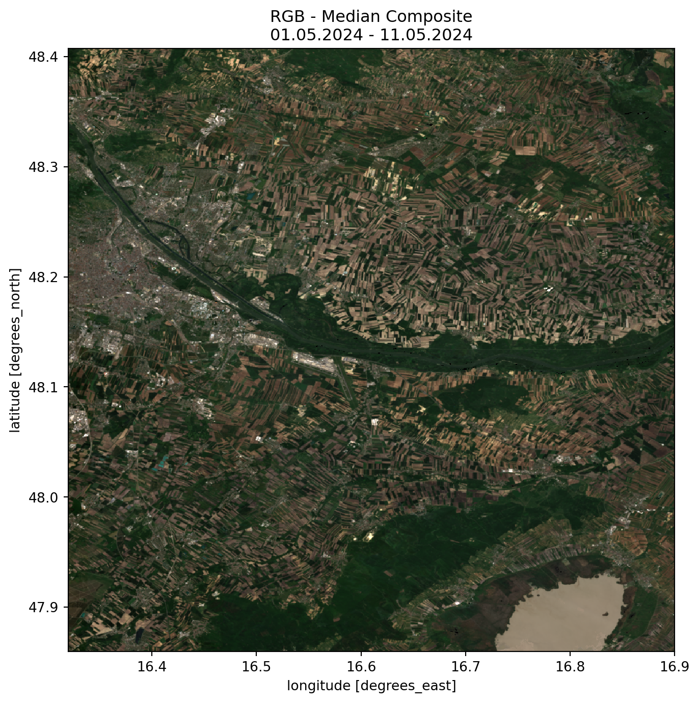
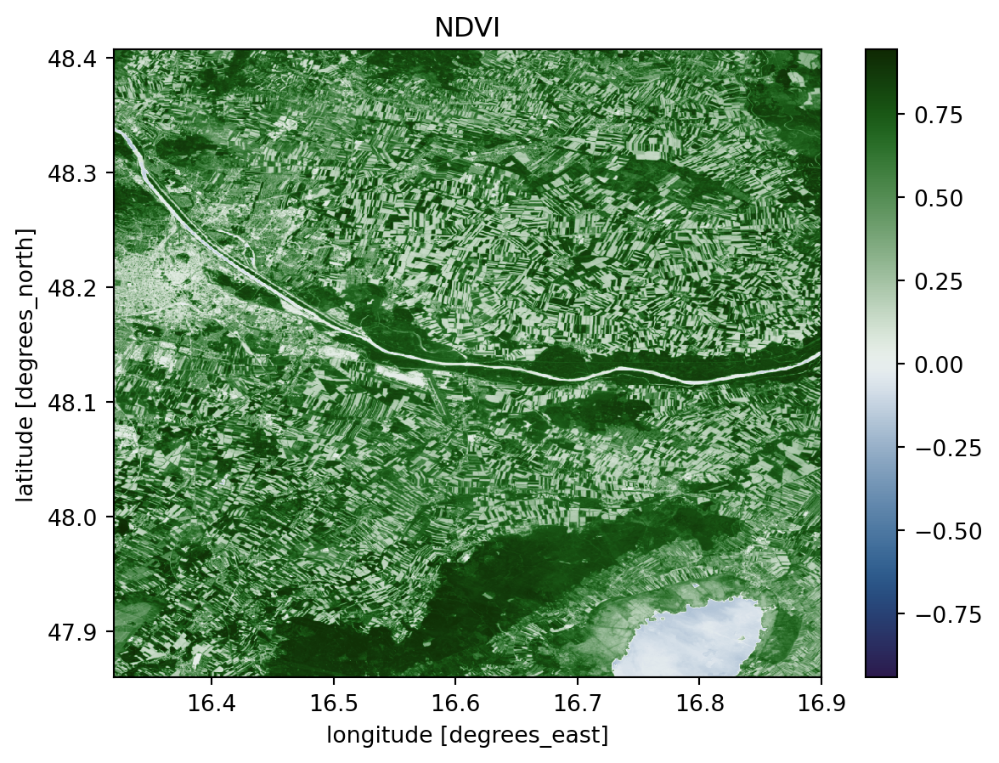
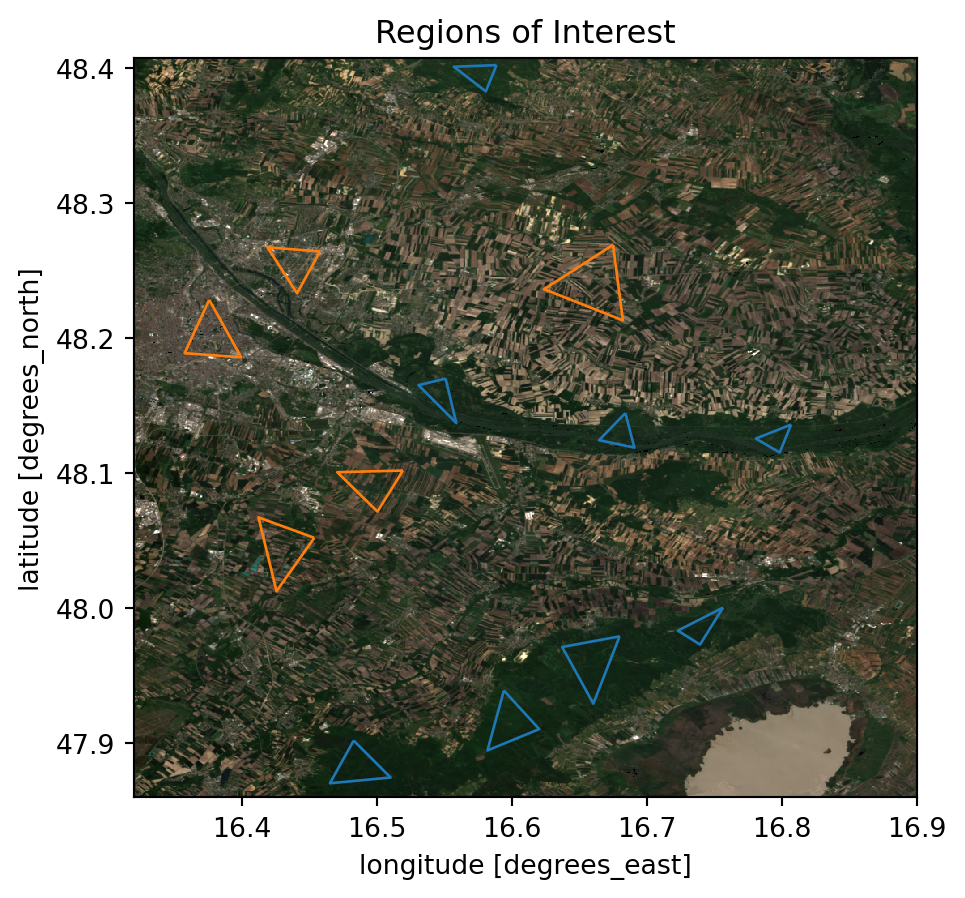
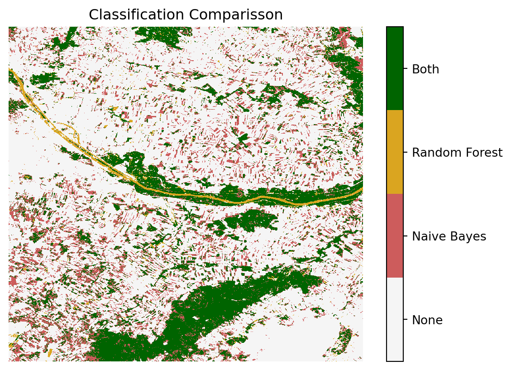
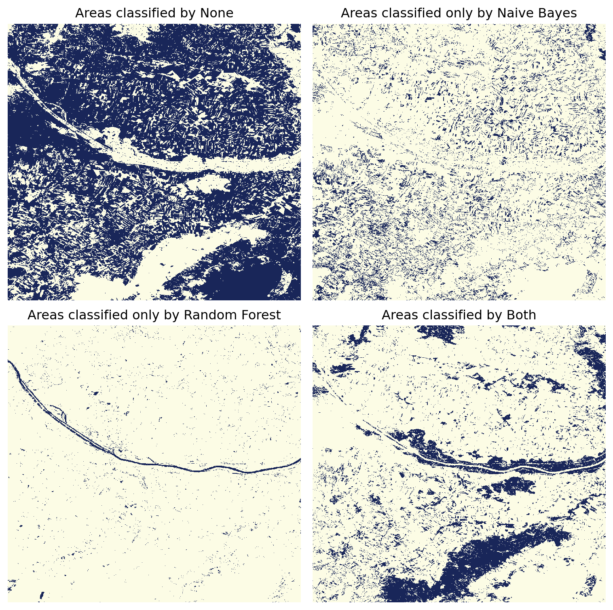

In this chapter, we will employ machine learning techniques to classify a scene using satellite imagery. Specifically, we will utilize scikit-learn to implement two distinct classifiers and subsequently compare their results. To begin, we need to import the following modules.
Code
from datetime import datetime, timedeltaimport xarray as xrimport pystac_clientimport stackstacimport odc.stacimport rioxarrayimport geopandas as gpdfrom odc.geo.geobox import GeoBoxfrom dask.diagnostics import ProgressBarfrom rasterio.enums import Resamplingfrom shapely.geometry import Polygon, mappingimport cmcrameri as cmcimport numpy as npimport matplotlib.pyplot as pltimport seaborn as snsimport pandas as pdfrom pathlib import Path# Scikit Learnfrom sklearn.naive_bayes import GaussianNBfrom sklearn.metrics import confusion_matrixfrom sklearn.metrics import classification_reportfrom sklearn.ensemble import RandomForestClassifierfrom sklearn.model_selection import train_test_splitimport matplotlib.colors as colors
Before we start, we need to load the data. We will use odc-stac to obtain data from Earth Search by Element 84. Here we define the area of interest and the time frame, aswell as the EPSG code and the resolution.
1.1.1 Searching Catalog
The module odc-stac provides access to free, open source satelite data. To retrieve the data, we must define several parameters that specify the location and time period for the satellite data. Additionally, we must specify the data collection we wish to access, as multiple collections are available. In this example, we will use multispectral imagery from the Sentinel-2 satellite.
We will now focus on the area south-east of Vienna, where the Nationalpark Donauauen is situated. The time frame we are interested in is the beginning of May 2024. After passing these parameters to the stac-catalog we have found 10 scenes that we can use for our analysis.
1.1.2 Loading the Data
Now we will load the data directly into an xarray dataset, which we can use to perform computations on the data. xarray is a powerful library for working with multi-dimensional arrays, making it well-suited for handling satellite data.
Here’s how we can load the data using odc-stac and xarray:
/usr/share/miniconda/envs/01_classification/lib/python3.10/site-packages/rasterio/warp.py:344: NotGeoreferencedWarning: Dataset has no geotransform, gcps, or rpcs. The identity matrix will be returned.
_reproject(
/usr/share/miniconda/envs/01_classification/lib/python3.10/site-packages/rasterio/warp.py:344: NotGeoreferencedWarning: Dataset has no geotransform, gcps, or rpcs. The identity matrix will be returned.
_reproject(
With the image data now in our possession, we can proceed with computations and visualizations.
First, we define a mask to exclude cloud cover and areas with missing data. Subsequently, we create a composite median image, where each pixel value represents the median value across all the scenes we have identified. This approach helps to eliminate clouds and outliers present in some of the images, thereby providing a clearer and more representative visualization of the scene.
Code
# define a mask for valid pixels (non-cloud)def is_valid_pixel(data):# include only vegetated, not_vegitated, water, and snowreturn ((data >3) & (data <7)) | (data==11)ds_odc['valid'] = is_valid_pixel(ds_odc.scl)#ds_odc.valid.sum("time").plot()def avg(ds):return (ds / ds.max() *2)# compute the masked medianrgb_median = ( ds_odc[['red', 'green', 'blue']] .where(ds_odc.valid) .to_dataarray(dim="band") .transpose(..., "band") .median(dim="time") .astype(int))rgb_comp = avg(rgb_median)plot = rgb_comp.plot.imshow(rgb="band", figsize=(8, 8))plot.axes.set_title(f"RGB - Median Composite\n{start_date.strftime('%d.%m.%Y')} - {end_date.strftime('%d.%m.%Y')}")plt.show()
Clipping input data to the valid range for imshow with RGB data ([0..1] for floats or [0..255] for integers). Got range [-2593019971002186.0..2.0].

1.2.2 NDVI Image
To get an first impression of the data, we can calculate the NDVI (Normalized Difference Vegetation Index) and plot it. The NDVI is calculated by useing the following formula. (Rouse et al. 1974)
\[
NDVI = \frac{NIR - Red}{NIR + Red}
\]
This gives us a good overview of the vegetation in the area. The values can range from -1 to 1 where the following meanings are associated with these values:
-1 to 0 indicate dead plants or inanimate objects
0 to 0.33 are unhealthy plants
0.33 to 0.66 are moderatly healthy plants
0.66 to 1 are very healthy plants
Code
# Normalized Difference Vegetation Index (NDVI)def normalized_difference(a, b):return (a - b*1.) / (a + b)ndvi = normalized_difference(ds_odc.nir, ds_odc.red)ndvi.median(dim="time").plot.imshow(cmap='cmc.cork').axes.set_title('NDVI')plt.show()

1.3 Classification
1.3.1 Regions of Interest
Since this is a supervised classification, we need to have some training data. Therefore we need to define areas or regions, which we are certain represent the feature which we are classifiying. In this case we are looking for forested areas and areas that are definitly not forested. We will use these to train our classifiers.
Clipping input data to the valid range for imshow with RGB data ([0..1] for floats or [0..255] for integers). Got range [-2593019971002186.0..2.0].

1.3.2 Data Preparation
Additionally to the Regions of Interest we will extract the bands that we want to use for the classification from the loaded Dataset. With that we will create a Training and Testing Dataset, which we will train the classifier on.
Code
# Classifiying dataset (only necessary bands)bands = ['red', 'green', 'blue', 'nir']ds_class = ( ds_odc[bands] .where(ds_odc.valid) .median(dim="time"))ds_class = avg(ds_class)ds_class = ds_class.fillna(0)def clip_array(ds:xr.Dataset, polygons): clipped = ds.rio.clip(polygons, invert=False, all_touched=False, drop=True) clipped_nan = clipped.where(clipped == ds)return clipped_nan# Dictionaries with Dataarrays, each clipped by a Polygondata_dict_feat = {idx: clip_array(ds_class, polygon) for idx, polygon in forest_areas.items()}data_dict_nonfeat = {idx: clip_array(ds_class, polygon) for idx, polygon in nonforest_areas.items()}# Reshape the polygon dataarrays to get a tuple (one value per band) of pixel valuesfeat_data = [xarray.to_array().values.reshape(len(bands),-1).T for xarray in data_dict_feat.values()] # replaced median_data_dict_feat with data_dict_featnonfeat_data = [xarray.to_array().values.reshape(len(bands),-1).T for xarray in data_dict_nonfeat.values()] # replaced median_data_dict_feat with data_dict_feat# The rows of the different polygons are concatenated to a single array for further processingfeat_values = np.concatenate(feat_data)nonfeat_values = np.concatenate(nonfeat_data)# Drop Nan ValuesX_feat_data = feat_values[~np.isnan(feat_values).any(axis=1)]X_nonfeat_data = nonfeat_values[~np.isnan(nonfeat_values).any(axis=1)]# Creating Output Vector (1 for pixel is features; 0 for pixel is not feature)y_feat_data = np.ones(X_feat_data.shape[0])y_nonfeat_data = np.zeros(X_nonfeat_data.shape[0])# Concatnate all Classes for training X = np.concatenate([X_feat_data, X_nonfeat_data])y = np.concatenate([y_feat_data, y_nonfeat_data])# Split into Training and Testing Data.X_train, X_test, y_train, y_test = train_test_split(X, y, test_size=0.5, random_state=42)
Now that we have the training and testing data, we create an Image array of the actual scene which we want to classify.
Now that we have prepared all the needed data, we can start to classify the image.
We will start with a Naive Bayes classificator. We train the classificator on our Training data and apply it on the actual image.
Code
# Naive Bayes initialization and trainingnb = GaussianNB()nb_test = nb.fit(X_train, y_train)nb_predict = nb.predict(X_test)# Prediction on imagenb_predict_img = nb.predict(X_image_data)nb_predict_img = nb_predict_img.reshape(ds_class.sizes['latitude'], ds_class.sizes['longitude'])# Adding the Naive Bayes Prediction to the datasetds_class['NB-forest'] = xr.DataArray(nb_predict_img, dims=['latitude', 'longitude'], coords={'longitude': ds_class['longitude'], 'latitude': ds_class['latitude']})
To see how well the classification has worked we plot the image that has been predicted by the classifier. Furthermore we can have a look at the Classification Report and the Confusion Matrix.
To not only rely on one classificator lets have a look at another one. Here we use the Random Forest Classificator. The Procedure useing it is the same as before.
Code
# Random Forest initialization and trainingrf = RandomForestClassifier(n_estimators=100)rf_test = rf.fit(X_train, y_train)rf_predict = rf.predict(X_test)# Prediction on imagerf_predict_img = rf.predict(X_image_data)rf_predict_img = rf_predict_img.reshape(ds_class.sizes['latitude'], ds_class.sizes['longitude'])# Adding the Random Forest Prediction to the datasetds_class['RF-forest'] = xr.DataArray(rf_predict_img, dims=['latitude', 'longitude'], coords={'longitude': ds_class['longitude'], 'latitude': ds_class['latitude']})plot = ds_class['RF-forest'].plot.imshow(cmap=cmap_green, cbar_kwargs={'ticks': [0.25,0.75]})cbar = plot.colorbarcbar.set_ticklabels(['non-forest', 'forest'])plot.axes.set_title('Random Forest Classification')plt.show()# Print the Classification reportprint("RANDOM FOREST: \n "+ classification_report(y_test, rf_predict))# Print the confusion matrixcon_mat_rf = pd.DataFrame(confusion_matrix(y_test, rf_predict), index=['Actual Negative', 'Actual Positive'], columns=['Predicted Negative', 'Predicted Positive'])display(con_mat_rf)
We can already see from the classification reports and the confusion matrices that the random forest classifier has performed better. This is for example indicated by the lower values in the secondary diagonal, which means that False Positvies and Negatives are only minimal. It seems that Naive Bayes is more sensitive to False Positives.
1.3.5 Comparison of the Classificators
To have a more in depth look at the performance of the classificators, we can compare them. Lets see what areas both classificators agree upon, and which areas then don’t agree upon.
The areas that both agree upon are the bigger forests, like the Nationalpark Donauauen and the Leithagebirge also the urban areas of vienna have both rightfully not been classified.
Code
# Plot only one class, either None (0), Naive Bayes (1), Random Forest (2), or Both (3)fig, axs = plt.subplots(2,2, figsize=(8,8))ax = axs.ravel()for i inrange(4): ax[i].imshow(double_clf==i, cmap='cmc.oleron_r', interpolation='none') category = ['by None', 'only by Naive Bayes', 'only by Random Forest', 'by Both'][i] title ='Areas classified '+ category ax[i].set_title(title) ax[i].set_axis_off()plt.tight_layout()

When plotting the areas, where classification has happend, individually we can see that the random forest classifiyer falsly predicted the river danube as a forest. On the other hand has the naive bayes classifyer identified a lot of cropland as forest. Finally we can have a look at how big the percentage of forested areas in the scene are. We can see here that around 18% are forest and about 66% are not forest. The remaining areas are not so clear to define, as waterbodies and cropland are both in the remaining categories.
Code
counts = {}for num inrange(0,4): num_2_class = {0: 'None', 1: 'Naive Bayes', 2: 'Random Forest', 3: 'Both'} counts[num_2_class[num]] =int((double_clf == num).sum().values)class_counts_df = pd.DataFrame(list(counts.items()), columns=['Class', 'Count'])class_counts_df['Percentage'] = (class_counts_df['Count'] / class_counts_df['Count'].sum())*100ax = class_counts_df.plot.bar(x='Class', y='Percentage', rot=0, color='darkgreen', ylim=(0,100), title='Classified Areas per Classificator (%)')# Annotate the bars with the percentage valuesfor p in ax.patches: ax.annotate(f'{p.get_height():.1f}%', (p.get_x() + p.get_width() /2., p.get_height()), ha='center', va='center', xytext=(0, 9), textcoords='offset points')

Rouse, John Wilson, Rüdiger H Haas, John A Schell, Donald W Deering, et al. 1974. “Monitoring Vegetation Systems in the Great Plains with ERTS.”NASA Spec. Publ 351 (1): 309.